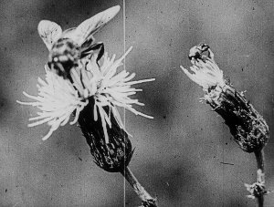

Minute Bodies – The Intimate World
of F. Percy Smith

Stuart A. StaplesGB 2016 – 16mm auf HD
60 min
B: Stuart A. Staples – K: F. Percy Smith – S: David Reeve
M: Tindersticks – V: BFI
Die Tindersticks vertonen eine der ersten „Geheimnisse der Natur“-Serien der Film- geschichte. Sänger Stuart A. Staples entdeckte mit einer BBC-Doku das Werk des Filmpioniers F. Percy Smith (1880-1945), der in den fühen 1920er Jahren mit mikro-filmischen Techniken experimentierte. Eine hypnotisch-immersive Musik- und Filmevasion dahin, wo die Welt am intimsten ist.
sonntag 8 okt 22.30 uhr werkstattkino
Stuart A. Staples * 1965 in Basford, Nottinghamshire. Musiker zunächst bei Asphalt Ribbons, Mitbegründer und Lead-Sänger der Tindersticks. Zwei Solo-Alben. Zusammenarbeit mit der französischen Regisseurin Claire Denis (NENETTE ET BONI, TROUBLE EVERY DAY). MINUTE BODIES ist sein erstes eigenes Filmprojekt.
F. Percy Smith (1880–1945) war britischer Biologe und einer der ersten Naturdokumentarfilmer. Er gilt als Pionier des mit Zeitraffer arbeitenden Mikro-Films.
Filme To Demonstrate How Spiders Fly 1909 – The Acrobatic Fly 1910 – The Birth of a Flower 1910 Fight for the Dardanelles 1915 – ab 1922 Secrets of Nature Series, darunter The Bedtime Stories of Archie the Ant 1925 – The World in a Wine-Glass 1931